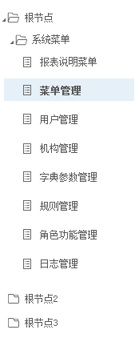

系统管理 > 按钮管理
菜单树

按钮名称
按钮代码
搜索
新增
修改
删除
序号
按钮名称
路径
创建时间
创建者
状态
图标
描述
代码
1
新增
管理人
2
新增
管理人
3
新增
管理人
4
新增
管理人
5
新增
管理人
6
新增
管理人
7
新增
管理人
每页10条 共548条
7
1
2
ID
名称
创建时间
路径
状态
代码
图标
图标库
描述
取消
保存
图标库
搜索
上传图标
新增
修改
删除
保存排序
排序上
排序下
导入
导出
初始化权限
显示全部
停用
用户角色配置
批量修改角色
修改签入密码
返回